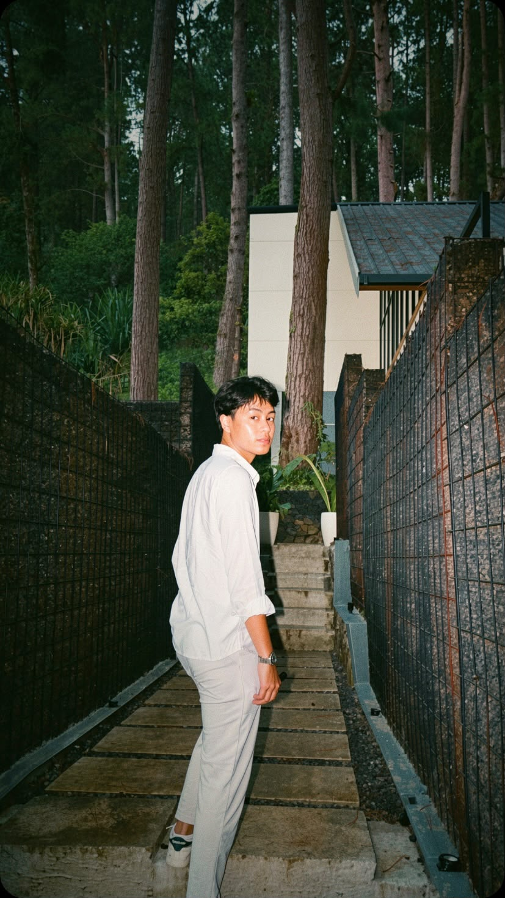

Ahmad Wahdan Nurjaman
English Literature graduate with hands-on experience in Customer Support, Client Relations, and Operational Administration. Actively exploring Web Development & AI Workflow integrations.

0
Customers Served / Shift
3.30
GPA at Unpas
0
Team Members Led (CCU Event)
A Journey of Continuous Learning
From English Literature to Tech Support and Beyond.
Saya tidak memulai perjalanan ini dengan tujuan yang benar-benar jelas. Saya hanya sedang berusaha menemukan tempat di mana saya bisa berkembang. Perjalanan saya dimulai dari Sastra Inggris di Universitas Pasundan. Selama bertahun-tahun, saya mempelajari kesusastraan, komunikasi, penulisan, analisis, serta berbagai perspektif tentang manusia dan budaya. Saat itu saya mungkin belum menyadari, tetapi banyak hal yang saya pelajari akhirnya menjadi bagian penting dalam perjalanan profesional saya.
Setelah lulus, perjalanan saya membawa saya ke berbagai lingkungan kerja. Saya pernah bekerja di bidang hospitality, melayani pelanggan sebagai barista, mendukung kegiatan operasional dan administrasi, hingga akhirnya bekerja di bidang customer support pada perusahaan teknologi. Setiap pengalaman memberikan saya sudut pandang yang berbeda.
Hospitality mengajarkan saya untuk memahami orang. Customer service mengajarkan saya untuk mendengarkan dan merespons. Administrasi mengajarkan saya untuk terorganisir dan memperhatikan detail. Technical support mengajarkan saya untuk melihat sebuah masalah dari sudut pandang yang berbeda.
Di tengah perjalanan tersebut, saya mulai tertarik pada teknologi. Bukan karena saya tiba-tiba ingin menjadi programmer, tetapi karena saya ingin memahami bagaimana sesuatu di balik layar dapat digunakan untuk membuat pekerjaan menjadi lebih mudah dan efektif. Rasa penasaran itu membawa saya untuk mulai mempelajari Web, UI/UX, dan Artificial Intelligence. Saya masih belajar, masih mencoba berbagai hal, dan masih banyak yang ingin saya pahami. Saya belum menganggap diri saya sebagai seorang ahli di bidang tersebut, dan bagi saya itu bukan masalah. Belajar adalah bagian dari perjalanan.
Saat ini, saya terus mengembangkan pengalaman di bidang Customer Service, Administrasi, Marketing, dan Hospitality, sembari memperluas kemampuan saya di bidang teknologi sebagai keahlian tambahan. Saya mungkin masih mencari tahu ke mana perjalanan ini akan membawa saya. Tetapi saya tahu satu hal: saya menikmati proses belajar, bekerja dengan orang lain, memecahkan masalah, dan mengubah apa yang saya pelajari menjadi sesuatu yang bermanfaat. Dan mungkin, portfolio ini hanyalah salah satu bab dari perjalanan tersebut.
Background
English Literature
Current Focus
Tech Support & AI Workflows
Core Strength
Empathy + Tech Troubleshooting
Location
Cimahi, West Java
Professional & Organizational Experience
A proven track record in technical support, hospitality, operations, and leadership.
SDA TEKNOLOGI
Jun 2026 – Sep 2026Customer & Operational Support
- Maintained a strict under 1-minute initial response time for client tickets and communications, ensuring high SLA compliance.
- Conducted systematic troubleshooting using WHMCS, accurately logging issues and monitoring ticket progress.
- Coordinated with internal technical teams for prompt server and hosting problem resolutions.
Ticket Received
Diagnosis / WHMCS
Resolution / Escalation
Click any step above to view operational detail.
PROF COFFEE TIGADE
Oct 2026 – Feb 2026Barista & Operational Support
- Served 80–100 customers per shift in high-volume environments while maintaining top-tier hospitality and order accuracy.
- Operated POS systems, conducted accurate daily sales recapitulations, and monitored inventory.
- Actively contributed promotional ideas and event concepts to boost customer engagement and retention.
FOUR POINTS BY SHERATON
Feb 2024 – Apr 2024F&B Banquet Intern
- Provided high-standard guest services during corporate meetings and wedding events.
- Maintained smooth coordination across international hospitality standards.
UNIVERSITAS PASUNDAN
2021 – 2022Project Lead (CCU) & Admin Staff (Covid-19 Vaccination)
- Led and coordinated a 15-member team to successfully execute the Cross Cultural Understanding (CCU) cultural event.
- Managed participant administration, task delegation, and on-site problem-solving to ensure the event met its objectives.
Projects & Portfolio Case Studies
Featured technical web development, academic writing, and digital documentation.
Prof Coffee Memory Website
A customized website built to archive operational memories, menu highlights, and community moments of Prof Coffee.
Academic Journal Draft
Undergraduate research paper focusing on English Literature analysis, structured reporting, and formal academic writing.
WHMCS SOP Documentation
Digital documentation standardizing the ticket handling workflow, response times, and escalation matrices.
Daily Sales Tracker (Excel)
Automated Excel template for recapitulating daily POS sales, inventory logging, and revenue reporting.
Competencies, Tech & AI Learning
Combining soft-skills excellence with modern tech tools and AI workflows.
Customer & Client Relations
- Customer Support & Helpdesk
- Complaint Handling & Resolution
- Client Engagement & Satisfaction
- Verbal & Written Communication
Operations & Data Admin
- Daily Sales Recapitulation & Reporting
- POS & Inventory Management
- Data Entry & Processing
- Microsoft Office Suite
Technical & Web Systems
- WHMCS (Web Hosting Management)
- Virtualization & Server Basics (Proxmox, Linux, VPS)
- HTML5, CSS3, VS Code & Git/GitHub
AI Workflow & Future Interests
Actively learning to integrate AI tools for daily productivity, workflow optimization, and exploring entry-level Marketing & Client Success strategies.
Get In Touch
Feel free to connect for opportunities or collaborations.
ahmadwahdannurjaman16@gmail.com
Phone / WhatsApp
+62 831 8164 2526
Location
Cimahi, West Java, Indonesia